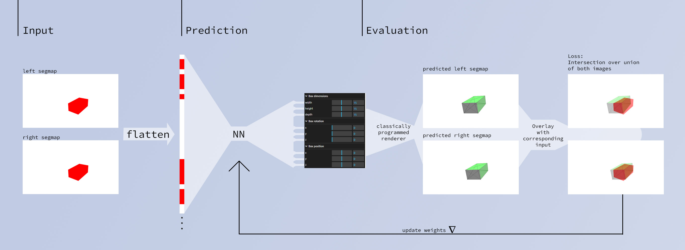

This is an idea on how to solve box measurement with a renderer-in-loop architecture. The main hypothesis is that the loss landscape should be really smooth and almost convex. We also don't need labeled data, only images + segmentations, which could be provided from Deeplab for example.
